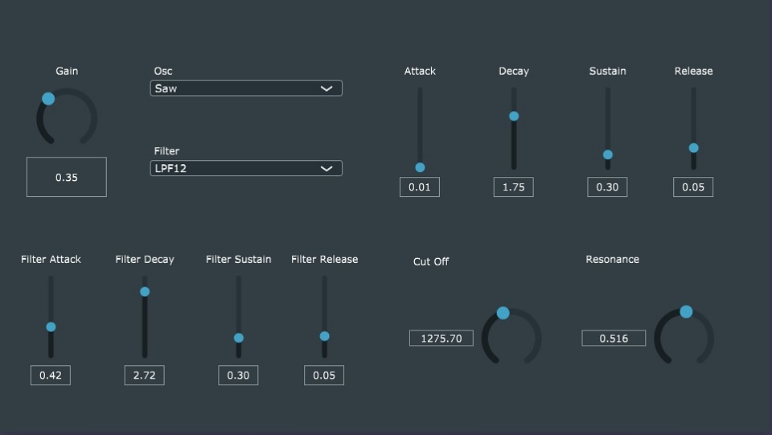
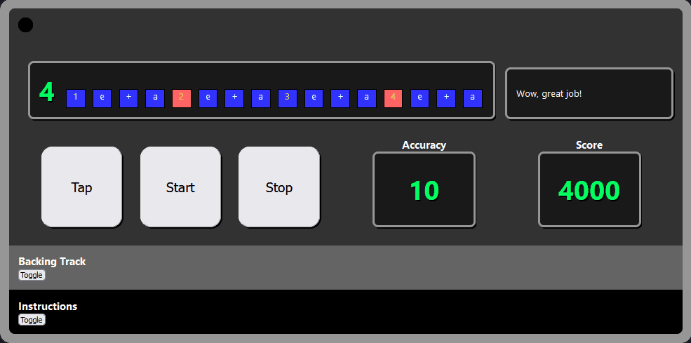

Greetings!
My name is Pete Wells and I am a software developer and graduate student in the Computer Science program at Portland State University. I began my journey here as a post-baccalaureate student with the goal to learn how to write great software. After working my way through the required undergrad, I've now began the master's program in hopes of gaining the knowledge that can help me pursue a career in software development.
I am also participating in an internship with Northwest Evaluation Association (NWEA) as a back-end software developer. NWEA is a national company that helps evaluate student's progress in various subjects in school and generate reports to help guide their education. This is an issue I am passionate about as I believe there is a lot more we can be doing to promote education nationally.
Outside of the computer, you can find me participating in the Portland music scene in a variety of ways. I like to make music at home, play drums in local bands across town and even work as an audio engineer from time to time. Beyond that, I am an avid gamer and plan on making some games of my own as well.
I believe that software can be a powerful tool to enrich people's lives and help guide us to solutions to problems that may be otherwise impossible to discover. To that end, I have always had an interest in learning how software like this can be built, how it can interact with us in our lives, and am excited for the future.
Experience
Software Engineer 2020 - 2021
Part of a small team of software developers designing Nombolo's video sharing social media app for both ios and Android. Responsible for full-stack development in the react-native framework.
Certificate earned: 2020
Completed Epicodus, an intensive 6-month full-stack development bootcamp. Learned the fundamentals of web development, app deployment, database management, and collaboration. Technologies included: Javascript, React, Ruby on Rails, SQL and HTML/CSS
Freelance Audio Engineer 2017 - Present
Professional sound engineer with years of experience in the local Portland music scene. Learned under the guidance of Billy Oskay at Big Red Studio in Corbett, Oregon.
Projects
Fresh Synth of Bel Air is A fun, fully featured cross-platform synthesizer to play around with. Created for Bart Massey's CS-510 Music, Sound and Computers course at PSU in Spring 2022. This was created using the Juce framework and features MIDI control, monophonic playback with selectable waveshapes, switchable ladder filter, and amplitude and filter envelopes. Supports VST3, OSX, Windows and Linux.
Rhythm Coach is a fun, web-based programmable drum machine app that improves your sense of rhythmic timing! It uses React and the ToneJS library for low latency playback to ensure that an accurate reading is made of your timing.
